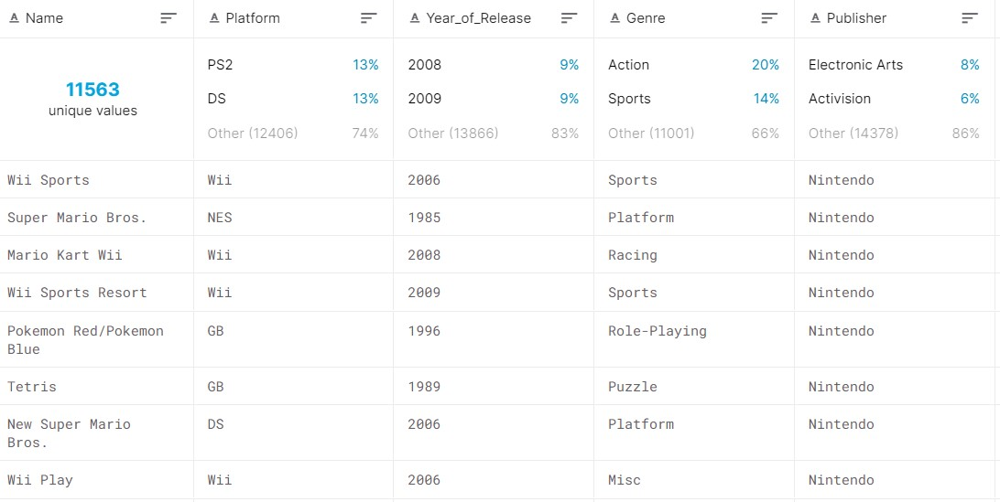

El dataset elegido para las actividades de d3 contiene las ventas anuales de videojuegos a partir del año 1980;
Los campos del conjunto incluyen: Nombre del juego, Plataforma, Año de lanzamiento, genero, quién lo publico y las ventas por región. Además, tiene campos con la calificacion de los juegos según los usuarios o la crítica espécializada junto con el Rating ESRB.
Fue publicado por el usuario de Kaggle SID_TWR y puede ser consultado en la siguiente liga:
Kaggle: kaggle.com/sidtwr/videogames-sales-dataset?select=Video_Games_Sales_as_at_22_Dec_2016.csv
Los datos sobre la calificacion de los juegos de Metacritic está incompleta debido a que solo cubre algunas consolas. Aproximadamente el 40% de los registros tienen todas las columnas pobladas en su totalidad. No se toma en cuenta el año 2016 debido a que no está completo.
.